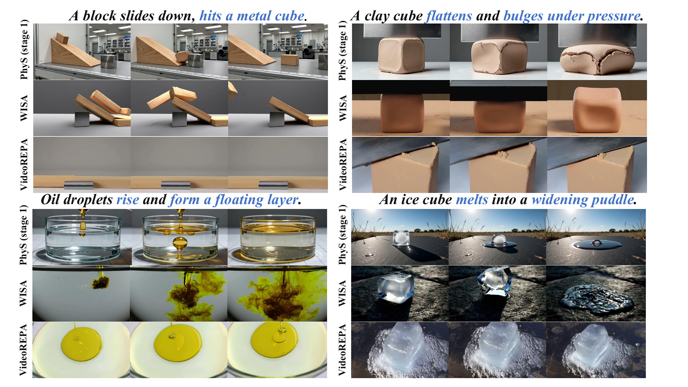
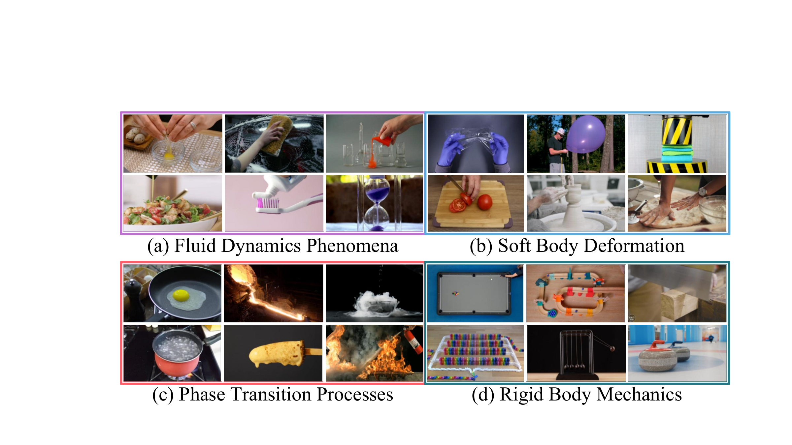
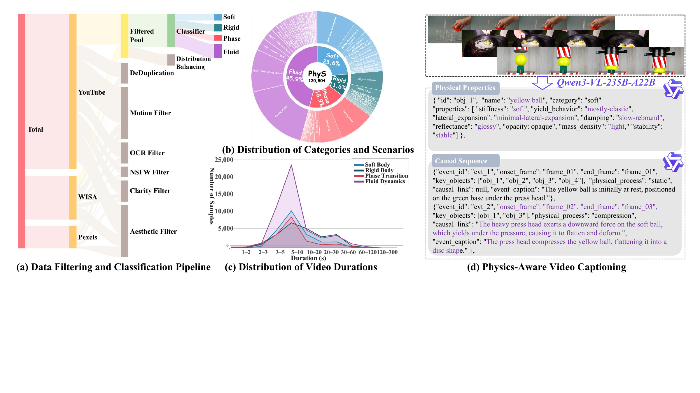

Streaming world models with physical priors
Distilling Physical Priors into Streaming World Models
Physically coherent video generation across rigid bodies, soft bodies, fluids, and phase transitions.
01 / Interactive comparisons
Watch the physics unfold.
Matched ten-second generations reveal whether a streaming model preserves the full physical sequence—not just a convincing first frame.
Forcing baseline
+PhyS
02 / Visual results
Physics that holds together over time.
PhyS preserves interactions, deformation, and state changes through long autoregressive rollouts.



03 / PhyS-120K dataset
120,804 real-world physical interactions.
Four families of observable physical processes, paired with structured object properties and causal event sequences.

120,804videos
4physical families
Structuredproperties + causal events

Distilling Physical Priors into Streaming World Models